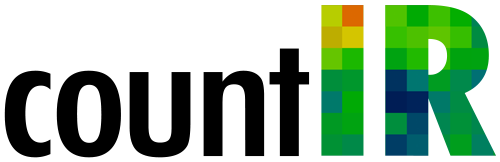
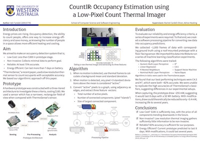
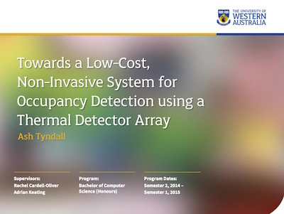

Australia faces many challenges; aging populations, rising energy prices and environmental sustainable concerns. By estimating the number of people within spaces, CountIR enables smart homes and offices that can address these issues. Leveraging machine learning and increasingly cheap thermal sensors and embedded computers, CountIR is accurate, robust, low-cost and privacy-preserving.
CountIR was a finalist for the WAITTA INCITE Awards Best Student Project of the Year. Ash and CountIR were recognised as one of seven total finalists, and one of only three non-group finalists.
CountIR is the product of Ash’s Honours thesis, which was developed in 2015. Ash received first-class honours for CountIR from the University of Western Australia, and the results of his research were published in the prestigious IEEE Sensors Journal. (view/download paper)
Ash was praised for his research skills and the breadth and depth of his inquiry. An examiner wrote; “There is not a lot to say about Ash Tyndall’s project and resulting thesis; they are superb.” (view full letter)
The most accessible explanation of Ash’s research is the research poster he prepared for the School of Computer Science;

A more in-depth, but still accessible, explanation of Ash’s work can be found in his seminar presentation slides;

Finally, if you want the whole story, you can read his thesis here.
The thesis is published under a Creative Commons license. A copy of the source code can be found on Github.
The related code is published under the GNU GPL. A copy of that can also be found on Github.